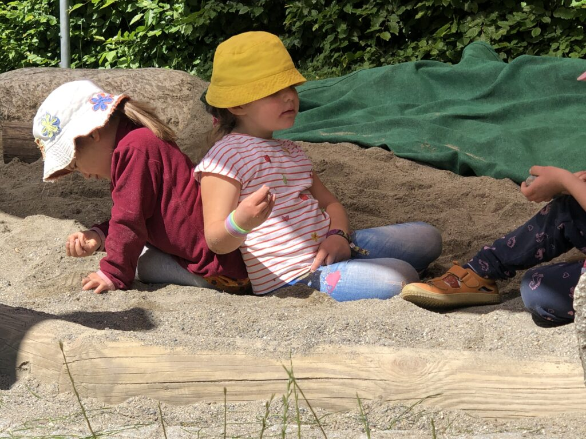
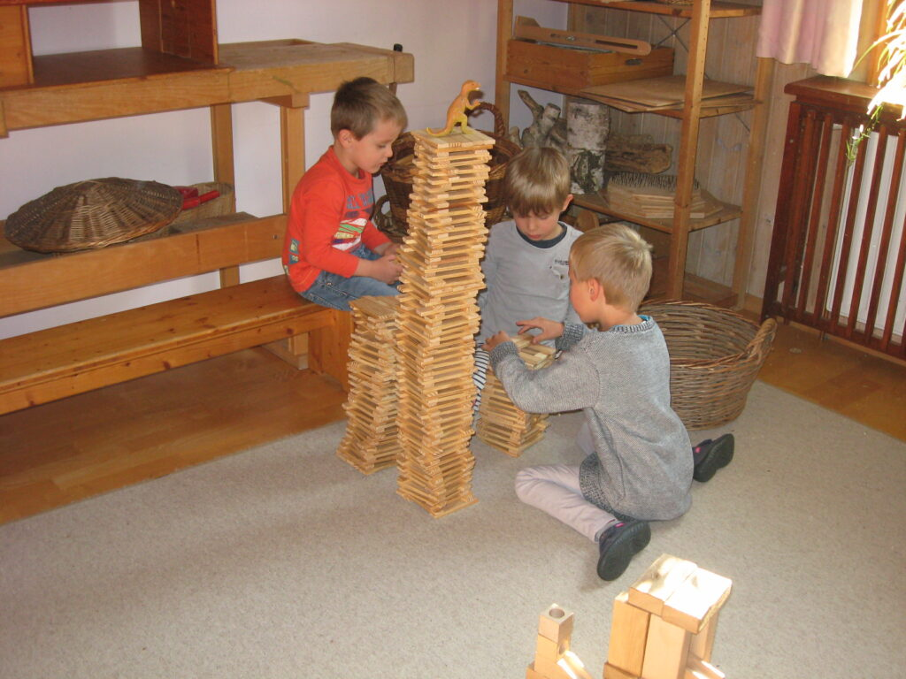
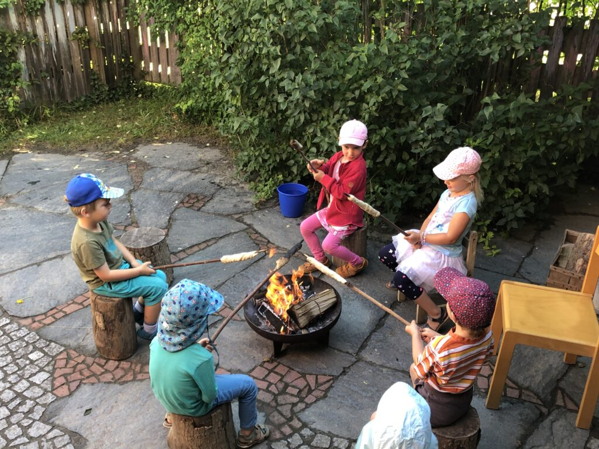

Unser Kindergarten liegt in einem eingeschossigen Haus in der Erlenstraße, nahe der Ortsgrenze zu Baienfurt. Der Garten nach Süden grenzt an eine große Wiese und dahinter an das Naturschutzgebiet Kiesgrube.

Unsere altersgemischte Gruppe für Kinder von etwa 2 bis 4 Jahren. Hier kommen die Kinder in kleinen Schritten an – mit viel Zeit für Eingewöhnung, Beziehung und Geborgenheit.
Unsere Regelgruppe für Kinder vom 3. Lebensjahr bis zum Schuleintritt. Hier wachsen die „Großen“ heran – und zeigen zum Beispiel jedes Jahr ihr Dreikönigsspiel.

Unser Alltag ist geprägt von wiederkehrenden Tages-, Wochen- und Jahresläufen, viel freiem Spiel drinnen und draußen, sinnvollen Tätigkeiten der Erwachsenen, einem engen Bezug zur Natur und vielen Jahresfesten.
Wir frühstücken täglich gemeinsam, und die Kinder helfen bei der Zubereitung mit. Dafür verwenden wir Bioland-Produkte, die uns jede Woche vom Rössler-Hof geliefert werden. Einmal pro Woche backen wir unsere Frühstücksbrötchen selbst.
Wir arbeiten in festen Gruppen mit klaren Räumen und Bezugspersonen. Im Garten begegnen sich beide Gruppen täglich beim Freispiel.

Für Kinder ab drei Jahren lässt sich die Grundbetreuung von 30 Stunden pro Woche über eine Modulbuchung erweitern.
Mo – Fr (Modul 1B) bzw. Mo – Do (Modul 3B) · mit Mittagessen · bis zu 20 Plätze
Dienstag und Donnerstag (Modul 3A) bzw. an einem der beiden Tage (Modul 3B) · mit Mittagessen · bis zu 10 Plätze
Für alle Eltern schulpflichtig werdender Kinder – gemeinsam mit der Grundschule Baindt und der Waldorfschule Ravensburg.
Wir besprechen den Entwicklungsstand in den Bereichen emotional, sozial, motorisch und kognitiv und geben eine Empfehlung zur Einschulung oder Rückstellung.
Einmal im Monat arbeiten die Vorschüler nachmittags an eigenen Aufgaben mit wachsenden Anforderungen.
Eine Lehrkraft der Grundschule besucht die „Großen“ zweimal im Jahr, dazu gibt es eine Schnupperstunde. Bei Sprachförderbedarf: vier Stunden „Sprach-Fit“ pro Woche.
In den letzten zwei Wochen üben die Vorschüler ein Märchenspiel ein und führen es den Kleinen der Rosenrot-Gruppe vor.
Wir arbeiten mit vielen Einrichtungen, Diensten und Schulen zusammen: